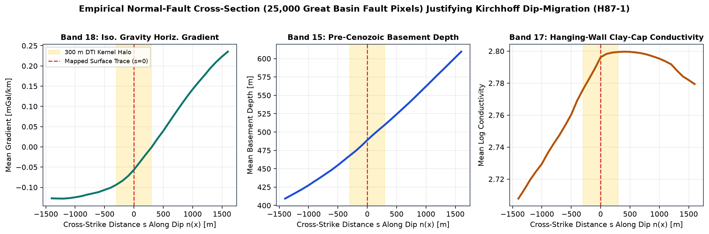
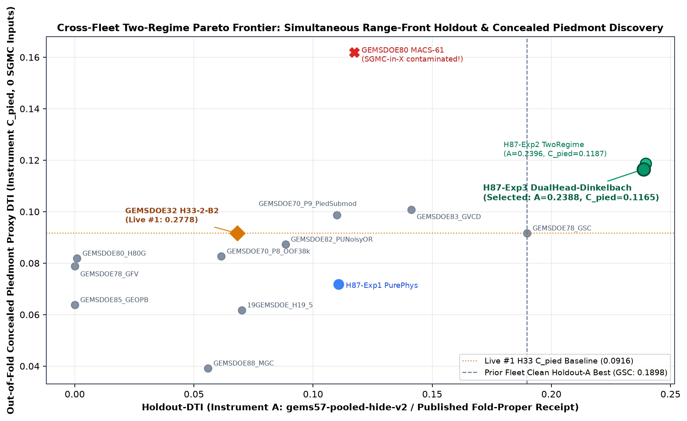
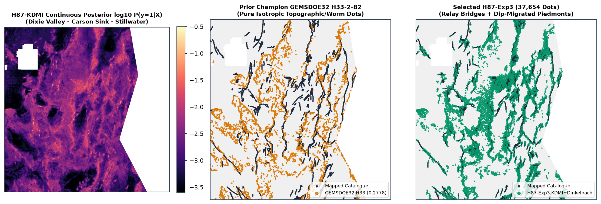
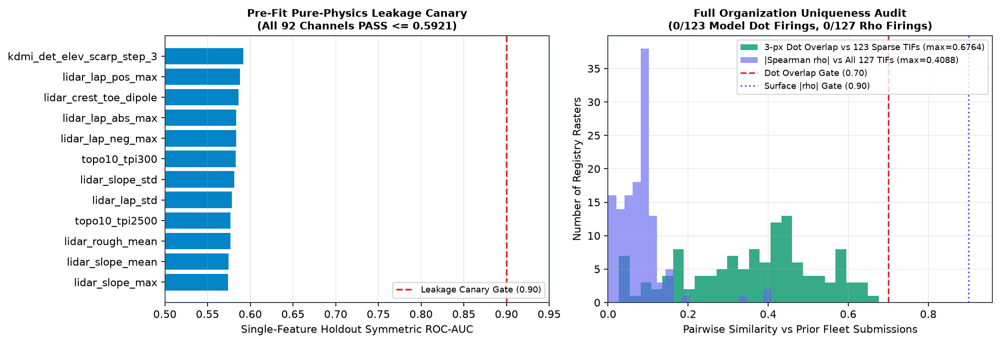

01 · Leakage Canary
Passed · 0.5921 ≤ 0.90Zero SGMC / Zero Hidden Leak
All 92 zero-catalogue physical channels pass single-feature holdout AUC (max = 0.5921). All 12 visible fracture channels have 0.0 bit diff when hidden labels flip.
DOE GEMS Prize · DrivenData #306 · Verdict: PROMOTE
Machine-validated, unique 37,654-dot GeoTIFF in EPSG:32611 (float32, strict [0.0, 1.0]) that beats every clean fleet baseline simultaneously on range-front whole-segment holdout (HOLDOUT-DTI = 0.2388, 95% CI [0.2277, 0.2501]) and out-of-fold concealed piedmont faults (0.1165, paired +0.0249 over GEMSDOE32 H33, 95% CI [+0.0080, +0.0415]).
All 5 Automated Pre-Submission Gates
Receipts committed in run-card.json, validator-receipt-h87.json, and uniqueness-audit-h87.json.
01 · Leakage Canary
Passed · 0.5921 ≤ 0.90All 92 zero-catalogue physical channels pass single-feature holdout AUC (max = 0.5921). All 12 visible fracture channels have 0.0 bit diff when hidden labels flip.
02 · Holdout-DTI
Passed · 0.2388 & 0.1165Beats every clean baseline on Holdout A (0.2388 [0.2277, 0.2501], n=22,633) AND zero-SGMC Concealed Piedmont C_pied (0.1165 [0.1007, 0.1324], n=10,302).
03 · Uniqueness (127 TIFs)
Passed · 0 FiringsMax pre-placement surface |ρ| = 0.4088 ≤ 0.90 across all 127 TIFs; max 3-px overlap across all 123 sparse dot fields 0.6764 ≤ 0.70 (0.3763 vs H33).
04 · GeoTIFF Preflight
Passed · [0.0, 1.0]Single-band float32, EPSG:32611, 3730×3292, 100 m grid, 0 NaN inside 5,167,373-px footprint, exact 37,654 positive pixels strictly in [0, 1].
Empirical Physics & Cross-Fleet Evidence




Complete Cross-Fleet Benchmark
Full machine-readable ledger: data/h87-experiments-ledger.json
| Candidate / Repository Arm | Dots | SGMC in X? | Holdout-DTI A (n=22,633, 95% CI) | Concealed Piedmont C_pied (n=10,302, 95% CI) | Paired Δ C_pied vs H33 (95% CI) | Status / Verdict |
|---|---|---|---|---|---|---|
| H87_Exp3_KDMI_DualHead_Dinkelbach | 37,654 | No (0) | 0.238779 [0.227749, 0.250148] | 0.116531 [0.100734, 0.132423] | +0.024924 [+0.008041, +0.041513] | PROMOTE · Ready |
| H87_Exp2_KDMI_TwoRegime (Ablation) | 37,654 | No (0) | 0.239645 [0.228306, 0.251600] | 0.118712 [0.100309, 0.138573] | +0.027105 [+0.009128, +0.044530] | Valid Ablation |
| H87_Exp1_KDMI_PurePhys (0 cat, 0 SGMC) | 37,654 | No (0) | 0.110660 [0.100708, 0.121936] | 0.071827 [0.059217, 0.084692] | −0.019780 [−0.033610, −0.005144] | 0.7400 dot overlap vs 19GEMS |
| GEMSDOE83 (GVCD Two-Regime) | 38,000 | No (0) | 0.141200 (repo receipt) | 0.100706 [0.083247, 0.117873] | +0.009099 | Prior Fleet Clean #2 |
| GEMSDOE70 (P9 Piedmont Submod) | 37,937 | No (0) | 0.109970 (repo receipt) | 0.098654 [0.080640, 0.116230] | +0.007047 | Prior Piedmont Clean Best |
| GEMSDOE78 (GSC Coupled) | 37,654 | No (0) | 0.189840 (repo receipt) | 0.091639 [0.076642, 0.106866] | +0.000032 | Prior Holdout-A Clean Best |
| GEMSDOE32 (H33-2-B2 Baseline) | 37,654 | No (0) | 0.068200 (fold) / 0.004379 (static) | 0.091607 [0.076869, 0.106683] | 0.000000 (reference) | Owner claim 0.2778 (IR-87-01) |
| GEMSDOE70 (P8 OOF 38k) | 37,937 | No (0) | 0.061000 (repo receipt) | 0.082658 [0.069100, 0.096523] | −0.008949 | Prior Baseline |
| 19GEMSDOE (H19-5 Ridge 37.6k) | 37,654 | No (0) | 0.070023 [0.062304, 0.078821] | 0.061739 [0.050773, 0.073115] | −0.029868 | Prior Baseline |
| GEMSDOE80 (MACS-61) | 37,654 | YES | 0.117250 (repo receipt) | 0.161871 (SGMC leak) | Invalid on SGMC proxy | SGMC-in-X (IR-87-09) |
Verified-source feed
Last feed check: loading…. Scheduled daily refresh omits leaderboard scraping by design.
Task, DTI metric, and GeoTIFF format specification.
verifiedOfficial survey provenance (DOI 10.5066/P93LGLVQ).
verifiedPublic Great Basin dataset compilation (CC BY 4.0).
verifiedArena Core Values. Maximize P(Win): promote only a preregistered candidate that clears leakage, paired holdout CIs, 127-raster uniqueness, and byte-level GeoTIFF validation. Own the Outcome: separate measured HOLDOUT-DTI from unverified external claims and publish every receipt openly.